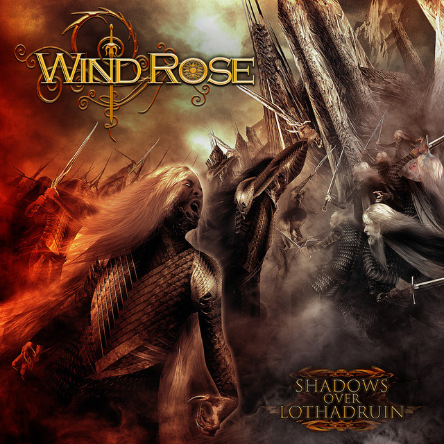
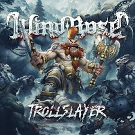
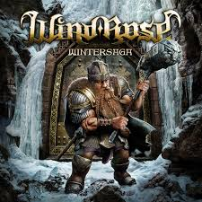
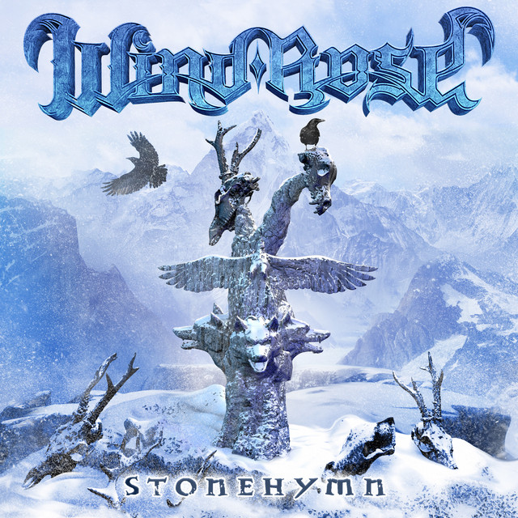

Veja mais sobre a banda que utiliza temas líricos inspirados nas obras de J.R.R.Tolkien
Álbuns

Shadows Over Lothadruin
Shadows Over Lothadruin (2012) é o álbum de estreia do Wind Rose. Com influências sinfônicas, narra a jornada do herói Doron. A sonoridade épica remete a Blind Guardian e Rhapsody of Fire.

Trollslayer
O mais recente álbum da Wind Rose. Com temática de anões, o álbum combina power metal e folk metal, com faixas como "Rock and Stone" e "To be a Dwarf". Este trabalho consolida a banda como referência no gênero.

Wardens Of The West Wind
O segundo álbum do Wind Rose, combinando power metal com influências folk e sinfônicas. O disco explora temas épicos de fantasia, com destaque para faixas como "The Breed of Durin" e "Ode to the West Wind", que mostram a força da banda em criar atmosferas grandiosas.
Warfront
Um verdadeiro hino de batalha do Wind Rose, misturando power metal épico com influências folk e sinfônicas. O álbum transporta os ouvintes para um campo de guerra fantástico, com coros imponentes e riffs avassaladores. Faixas como "Gates of Ekrund" e "Fellows of the Hammer" capturam a grandiosidade e a energia de um exército marchando rumo à vitória.

Wintersaga
Uma explosão de poder anão, onde o Wind Rose transforma lendas e batalhas em hinos épicos. Misturando power metal grandioso com folk vibrante, o álbum leva os ouvintes a tavernas festivas e campos de guerra. Faixas como "Diggy Diggy Hole" e "Drunken Dwarves" garantem coros viciantes e uma atmosfera digna dos verdadeiros senhores das montanhas!

Stonehymn
Stonehymn é um álbum épico da banda italiana Wind Rose, lançado em 2017, que combina power metal sinfônico com influências de folk metal. Com faixas como "To Erebor", o disco evoca paisagens grandiosas e batalhas lendárias, utilizando coros imponentes, riffs pesados e melodias cativantes. A produção refinada e a temática fantástica fazem deste um trabalho marcante para fãs de fantasia e metal épico.